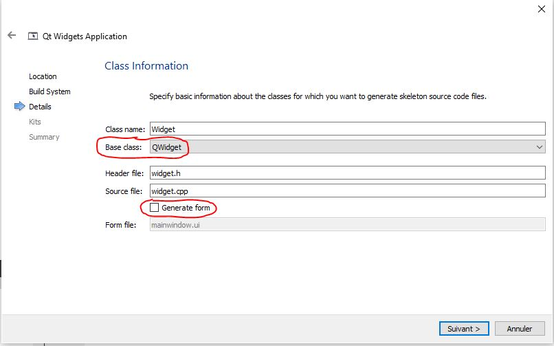
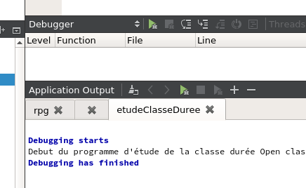
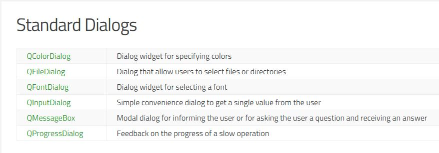

Notes sur Qt¶
{kind=link}
- Auteur
J.Soranzo
- Date
Novembre 2019
- Société
VoLAB
- Entity
VoRoBoTics
Table des matières Qt
Présentation¶
Une vidéo globale 1 sur Youtube (traite seulement des applications QWidget)
Plus qu’une bibliothèque Qt est un framework multiplateforme. Il vient de l’écosystème KDE.
Il est composé de modules: core, GUI, dessin, reseau, xml, script, SVG, SQL… SerialPort
Avertissement
Les getteurs ne s’appellent pas getAttribut() mais directement attribut(). En revanche les setteurs s’appellent bien setAttribut.
Note
La règle de nommage est le lowerCamelCase
Les outils Qt¶
Qt est un framework certes. C’est donc une énorme bibliothèque.
Mais c’est aussi un ensemble d’outils parmis lesquels on est un peu perdu quand on débute.
Le premier outil absolument nécessaire est l’IDE. Il aurait pu se nomme Qt IDE mais non !
L’IDE de Qt est Qt creator. Si il n’y avait qu’un seul outil Qt ce serait celui-là.
On peut éditer son code notamment programmer son interface graphique et le debugger.
Le second outil pas nécessaire mais rapidement indispensable est Qt Designer.
Qt Designer permet de dessiner ses fenêtres. Bien qu’on puisse le faire directement en codant dans Qt creator, avec Qt Designer on s’évite d’avoir à fournir des positions en pixel pour chaque élément de sa/ses boîte de dialogues.
Les premiers chapitres dédiés à Qt dans les cours sur Openclassroom 2 n’utilisent pas Qt Designer et montrent comment faire sans.
Installation¶
Il faut son permis de conduire ! Bien que certaines case soient déjà cochées cela ne suffit pas.
Il faut choisir au moins un environnement (kits) mingw par exemple (32 et 64 bits).
Ne pas hésiter à consulter : Installation et premiers pas avec Qt 5.12 4
Service minimum¶
Appli console¶
#include <QCoreApplication>
#include <iostream>
using namespace std;
int main(int argc, char *argv[])
{
QCoreApplication a(argc, argv);
cout << "hello" << endl;
return a.exec();
}
Appli graphique¶
N’importe quel QWidget peut faire office de fénêtre. Donc pour créer un fenêtre minimum, il suffit de créer un QWidget : QWidget fen; suivi d’un fen.show();
Fichier .pro
QT += widgets
SOURCES += \
main.cpp \
mafenetre.cpp
HEADERS += \
mafenetre.h
Fichier main.cpp:
#include <QApplication>
#include <QPushButton>
#include "mafenetre.h"
int main(int argc, char *argv[]){
QApplication app(argc, argv);
MaFenetre fen;
fen.show();
return app.exec();
}
Fichier mafenetre.h:
#ifndef DEF_MAFENETRE
#define DEF_MAFENETRE
#include <QWidget>
#include <QPushButton>
class MaFenetre : public QWidget // On hérite de QWidget (IMPORTANT)
{
public:
MaFenetre();
~MaFenetre();
private:
QPushButton *m_bouton;
};
#endif
Fichier mafenetre.cpp
#include "mafenetre.h"
MaFenetre::MaFenetre()
{
setFixedSize(200,100);
m_bouton = new QPushButton("OK button", this);
}
MaFenetre::~MaFenetre(){
delete m_bouton;
}
On peut également créer une application minimum sans QDesigner et donc sans fichier .ui en décochant la case Generate form on a alors une appliminimum qui utilise la classe QMainWindow 5
Ou encore basée sur les classes QWidget ou QDialog comme sur la copie d’écran ci-dessous:
{kind=link}
Avertissement
- Quand on uilise un ui generé par QtDesigner, il faut faire précédé ses widget par ui->.
Pas forcément il suffit de faire hérité en private sa fenetre de l’ui comme dans l’exemple OpenClassRoom
Exemple openclassroom ui 6 chat client
#ifndef HEADER_FENCLIENT
#define HEADER_FENCLIENT
#include <QtWidgets>
#include <QtNetwork>
#include "ui_FenClient.h"
class FenClient : public QWidget, private Ui::FenClient
{
Q_OBJECT
public:
FenClient();
//...
Utilisation avec Qt Designer¶
C’est pas aussi trivial qu’il n’y parait !
Il n’y a pas vraiment de tuto internet C++/Qt Designer ceux qu’on trouve c’est pour Python !
Pb dans l’exemple client chat d’Openclassroom, il y a un fichier auto généré ui_fenclient.h mais je ne sais plus comment ?
Ce n’est pas dans les tuto Qt que cette technique est expliquée.
On le retrouve dans l’aide Qt : using a Designer UI File inYour Application 7
Il s’agit en fait d’un fichier auto généré par qmake au moment de la compilation.
Nécessite d’avoir dans le fichier .pro QT += widgets.
Ce fichier est placé dans le répertoire de compilation pas dans les sources !!!
Pour le moment, je vais continuer d’utiliser la syntaxe ui-> devant tous les objets créés dans Qt Desinger…
Note
A propos de la mise à jour du fichier d’entête ui_claasFenetre.h : ce n’est pas qmake qui met à jour ce fichier mais bien le processus de compilation et donc le make file…
Autres choses¶
Qt et répertoires¶
Qt a tendance à prendre ses aises dans le répertoire du projet:
les fichiers compilés se trouvent à un niveau supérieur par rapport au projet
les noms de ces répertoires sont excessivement long !
Le fait que les fichiers compilés se trouve à un niveau supérieur peut être déroutant au début mais a l’usage cela peut s’avérer utile quand, par exemple, on veut récupérer ses fichiers sources de plusieurs projets en méme temps pour les déplacer sur une autre machine.
Mode debug¶
{kind=link}
- Attention ces boutons verts ne sont pas identiques. Celui du haut lance un nouveau debug
Celui du bas refait la même cession !
Classes qui me semblent les plus utiles¶
De base¶
QWidget 9 : une fenêtre est un widget, donc .show() s’applique.
QPushButton 10 est aussi un widget
QLineEdit 8 pour entrer du texte
QTextEdit + les layouts.
Advanced¶
QFileSystemModel 11 et QTreeView 11 permettent de faire une arborescence disque en quelques lignes…
Il y a l”exemple de QStringList 12 avec sélection dans OpenClassroom
More advenced :
QDataStream, QTcpSocket, QTcpServer
qobject_cast<>() : pas vraiment une classe mais fort utile ! Permet de faire du dynamique_cast mais seulement sur des QObjet (et ses dérivées) sans utiliser le Run Time Type Information (RTTI).
RTTI donc dynamic_cast<>() qui de plus est compilo dépendant !
Référence : qobject_cast sur stackoverflow 13
Exemple classique d’utilisation dans un slot sender() renvoi un pointeur sur QObject qu’on peut alors cast sur un QPushButton par exemple:
QObject::connect( btn, &QPushButton::clicked, this, &MyClass::onClicked );
void MyClass::onClicked()
{
// How to get pointer to a button:
QObject *p = sender();
// It's QObject. Now we need to cast it to button:
QPushButton *btn = qobject_cast<QPushButon *>( p );
Q_ASSERT( btn != nullptr ); // Check that a cast was successfull
// Now we can use a QObject as a button:
btn->setText( "We just clicked on a button!" );
}
On nottera au passage la nouvelle syntaxe possible de connect qui n’utilise pas SIGNAL() et SLOT()
Après modification du fichier pro¶
QApplication not found.
Ajouter : QT += widgets
Et Exécuter qmake.
Qt widgets vs Qt Quick application¶
Qt Quick plutôt dédié aux applications de style mobile (Développement en QML et javascript).
Qt Widget plutôt pour les applications de style Desktop.
Comprendre signals et slots¶
Présentation¶
Signaux : données émises (messages) par une classe en réaction à un évènement
Slot méthode spéciale qui permet de réagir à un évènement
Un signal déclenche en général un slot. On dit un signal est connecté à un slot.
Utilisation¶
Pour connecter un signal à un slot, on utilise la méthode connect() (méthode statique de QObject)
Exemple:
QObject::connect(m_bouton, SIGNAL(clicked()), qApp, SLOT(quit()));
Note
SIGNAL() et SLOT() sont des macros obligatoires.
C’est l’équivalent de DoDataExchange et de ses macros DDX_control, DDX_Text et de la macro BEGIN_MESSAGE_MAP de VisualCpp
Note
qApp est un pointeur sur l’objet QApplication créé automatiquement (#include <QApplication>).
On peut passer des paramètres aux travers des signaux/slots
Exemples:
QObject::connect(m_slider, SIGNAL(valueChanged(int)), m_lcd, SLOT(display(int))) ;
QObject::connect(m_slider, SIGNAL(valueChanged(int)), m_bar, SLOT(setValue(int))) ;
Note
Ne pas oublier que les slot et les signaux s’héritent
Connaître l’émetteur d’un signal dans un slot¶
Pour déterminer l’objet à l’origine d’un signal (cas de plusieurs objetc connecté au même slot), on utilise la méthode sender() 14 de la class QObject
Création¶
Pour pouvoir créer son propre signal ou slot dans une classe, il faut que celle-ci dérive directement ou indirectement de QObject (un QWidget c’est bon par exemple)
Créer la macro Q_OBJECT dans le header de la classe
Exécuter qmake
Ajouter public slots: dans le header de la classe suivi d’une ou plusieurs méthodes pour définir les slots.
Pour un signal ajouter signals: suivi du prototype de la méthodes
Avertissement
Les méthodes signals: ne sont pas à implémenter dans le .cpp
Pour émettre un signal dempuis le code on utilise le mot clé emit suivi du nom de la méthode avec ses paramètre (on sépare de emit avec un espace - pas de parenthèses !)
Oserai-je un petit exemple ! Tiré du cours c++ de Openclassroom:
#include "mafenetre.h"
#include <QPushButton>
MaFenetre::MaFenetre()
{
setFixedSize(200,200);
m_bouton = new QPushButton("Quit", this);
m_bouton->setFont(QFont("Comic Sans MS", 14));
m_bouton->move(40, 150);
m_slider = new QSlider(Qt::Horizontal, this);
m_slider->setRange(200,600);
m_slider->setGeometry(10,60,150,20);
QObject::connect(m_bouton, SIGNAL(clicked()), qApp, SLOT(quit()));
QObject::connect(m_slider, SIGNAL(valueChanged(int)), this, SLOT(changerLargeur(int)));
}
MaFenetre::~MaFenetre(){
delete m_bouton;
}
void MaFenetre::changerLargeur(int largeur) {
setFixedSize(largeur, 200);
if (largeur == 600 ) emit largeurMax();
}
//le header:
#ifndef MAFENETRE_H
#define MAFENETRE_H
#include <QApplication>
#include <QPushButton>
#include <QWidget>
#include <QSlider>
class MaFenetre : public QWidget
{
Q_OBJECT
public:
MaFenetre();
~MaFenetre();
public slots:
void changerLargeur(int largeur);
signals:
void largeurMax();
private:
QPushButton *m_bouton;
QSlider *m_slider;
};
#endif // MAFENETRE_H
Avertissement
Après avoir ajouté la macro Q_OBJECT, faire un qmake sinon erreur vTable
Pour plus de détails voir signaux et slot dans OpenClassroom 15
Autoconnect¶
Il n’est pas nécessaire de réaliser la connexion dans le cas d’un bouton par exemple.
Si on respecte une certaine convention, Qt reconnait et fait la connexion pour nous.
on_bouton_clicked() ( dommage se n’est pas du lowerCamelCase ! )
La méthode auto-connect 16 est expliquée sur Openclassroom
Petits tracas¶
Sous Linux appli console : n’affiche rien (en mode debug)
Supprimer dans le fichier pro CONFIG += console
qmake + clean up + build all
cout¶
QString vs cout¶
L’opérateur << n’étant as surchargé dans QString, cout ne sait pas afficher QString. Il faut opérer une conversion comme par exemple:
QString::toLocal8Bit().constData()
Boîte de dialogue standard¶
{kind=link}
- Juste un petit mémo pour signaler que les boîtes de dialogue standard (sélectionner fichier,
sélectionner font, sélectionner une couleur, simple message d’alerte…) peuvent s’utiliser en statique (sans instance) tout au moins pour certaines cf. la doc rubriques Static Public Members.
#include <QFileDialog>
#include <QMessageBox>
#include <QColorDialog>
#include <QFontDialog>
Dans la doc officielle ici 17
Exemple:
int ret = QMessageBox::warning(this, tr("My Application"),
tr("The document has been modified.\n"
"Do you want to save your changes?"),
QMessageBox::Save | QMessageBox::Discard
| QMessageBox::Cancel,
QMessageBox::Save);
Les niveaux de sévérité de QMessageBox : question, information, warning, critical qui correspondent à des membres statiques…
Qt layout¶
- La classe QLayout est un classe abastraite ayant de nombreuses classes filles:
QBoxLayout
QGridLayout
QFormLayout
QStackLayout
QVBoxLayout
QHBoxLayout
L’intérêt majeur d’utiliser des Layout est leur faculté de redimensionnent automatique.
Avertissement
Les layout ne sont pas des Widgets, des QObject oui mais pas des QWidget donc ils n’héritent pas de QWidget.
- Méthodes importantes:
addWidget
- Méthode fondamentale de la classe Widget en lien avec les layouts:
setLayout
Astuce
La classe QFormLayout possède une méthode addRow qui permet d’ajouter en un coup un QlineEdit et sont étiquette.
Communication réseau¶
Référence : OpenClassRoom Communiquez en réseau 6
Architecture client/serveur¶
Côté serveur:
Créer une instance de QTcpServer, ex : serveur
Utiliser la méthode listen( QHostAdress::Any, numPort)
Connecter SIGNAL/SLOT entre le signal newConnection et un slot, ex: nouvelleConnexion()
QHostAdress::Any : permet d’écouter sur toutes les adresses de la machine.
Tout réside dans le slot nouvelleConnection
Chaque nouveau client est une instance d’un pointeur sur QTcpSocket (initialisé avec le retour de serveur->nextPendingConnexion() ) et rangé dans un tableau, de préférence, dynamique.
Une QList de pointeurs sur QTcpSocket par exemple.
QList<QTcpSocket *> clients
On connect alors les signaux readyRead() et disconnected() de chacune de ces instances à 2 slots exemple : receiveData() et deconnectClient()
Réception des données : QTcpSocket émet donc pour chaque instance (client connecté) un signal readyRead connecté à la seule méthode (slot) de réception. C’est là qu’intervient la méthode sender() de la classe QObject.
QTcpSocket *socket = qobject_cast<QTcpSocket *>(sender());
...
QDataStream in(socket);
Note
QDataStream : accepte en entrée QTcpSocket car cette dernière est conforme à la classe abstraite QIODevice.
Tips¶
#include <QtWidgets> évite de faire des includes un à un en fonction des Widgets utilisés. C’est un méga include.
Une alternative à setLayout( layout ) est de passer l’adresse du widget au constructeur du layout.
Voir la documentation de setlayout 19
Slot auto-connect : voir Autoconnect
Deploiement¶
deployment en anglais
Il y a bien évidement la page de référence de la documentation Qt sur le déploiement 20
Mais aussi : sur le site de Guillaume Beltz 21
Pour moi windeployqt.exe se trouve dans :
QtQt5.12.65.12.6mingw73_64bin : donc il est dépendant du kit utilisé !
J’ai ajouté le chemin directement dans la cosole (la mano)
windeploy --list target nom_appli.exe
Ne se contente pas de lister les fichier mais fais réellement la copie.
Pour ne pas faire la copie il faut faire:
windeploy --dry-run --list target nom_appli.exe
Une technique que j’ai expérimenté: #. Dans un nouveau dossier copié l’éxécutable complilé en mode realese #. Identifier le kit utilisé (et sa bonne version), ex MinGW.7.30 64bits #. Copier toutes les dll de QtQt5.12.65.12.6mingw73_64bin vers le nouveau répertoire #. Virer petit à petit celle qui ne serve pas et relancer l’exe a chaque fois.
Cette technique est inspirée du site wiki.qt.io 22
On pourra soit bosser directement dans le dossier realese avec windeployqt soit dans un nouveau dossier en y recopiant le .exe (inutile de chercher à spécifier un source dir et un dest dir)
Qt static linking¶
Cela se passe dans le fichier .pro principalement donc inutile de chercher une cas à cocher !
Semble très complexe et déconseillé.
Qt and snippets¶
Les snippets Doxygen simple existent nativement dans Qt suffit de commencer à taper @pour que la liste de complétion de code les affiche.
Création¶
Menu Outils/options…
Ligne : Editeur de texte/onglets Extraits de code
Là on peut créer ses propres extraits de code.
Utilisation¶
L’utilisation des snippets dans Qt passe par le même procédé que la complétion de code. Il suffit de commencer à taper le nom du snippet. On pourra par exemple faire précéder tous les snippet Doxygen par doxy_. Ainsi en tapant doxy_ on obtient dans l’éditeur la liste de tout ses snippets Doxygen.
Sauvegardes¶
Les snippets ne se trouvent pas dans
%QTINSTALLDIR%ToolsQtCreatorshareqtcreatorsnippets
mais dans
C:Users_votreLoginAppDataRoamingQtProjectqtcreatorsnippets
Weblinks¶
- 1
- 2(1,2)
https://openclassrooms.com/fr/courses/1894236-programmez-avec-le-langage-c/1898935-initiez-vous-a-qt
- 3
- 4
- 5
- 6(1,2)
- 7
- 8
- 9
- 10
- 11(1,2)
- 12
- 13
https://stackoverflow.com/questions/43994584/what-is-qobject-cast
- 14
- 15
- 16
- 17
- 18
- 19
- 20
- 21
http://guillaume.belz.free.fr/doku.php?id=deployer_une_application_qt
- 22